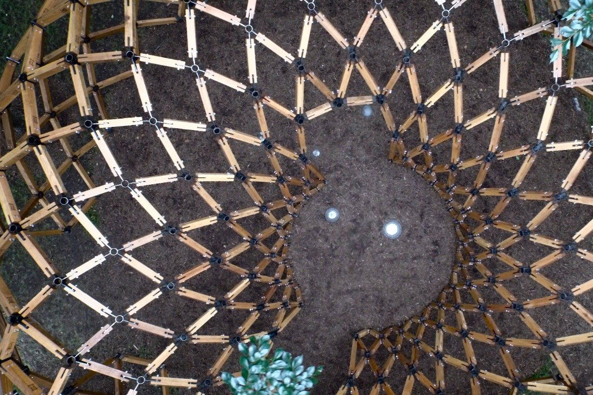
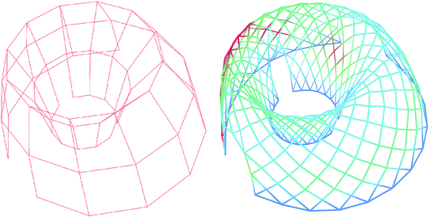
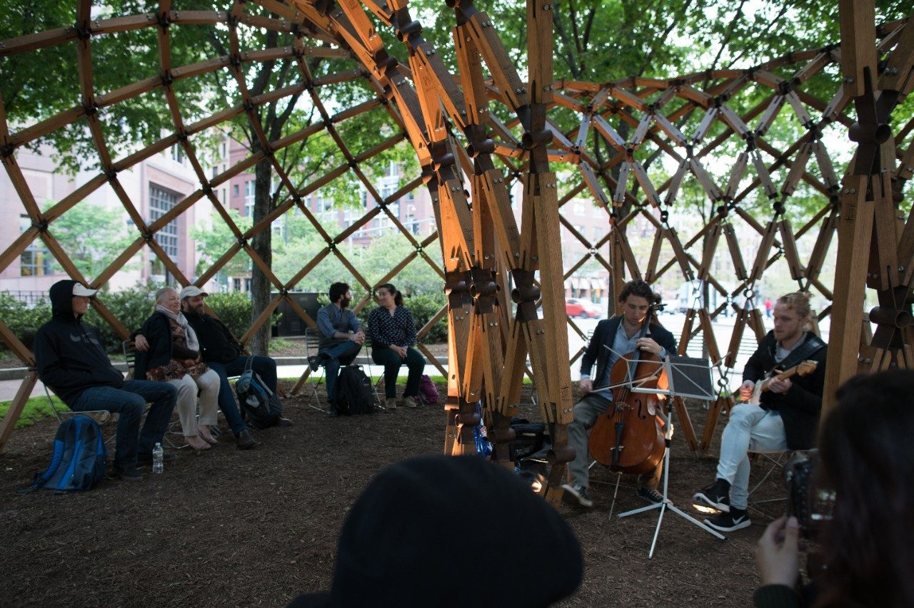

<div class="row">
  <div class="col-sm-12">
    <div id="carouselExampleControls" class="carousel slide" data-ride="carousel">
      <ol class="carousel-indicators">
        <li data-target="#carouselExampleControls" data-slide-to="0" class="active"></li>
        <li data-target="#carouselExampleControls" data-slide-to="1"></li>
        <li data-target="#carouselExampleControls" data-slide-to="2"></li>
        <li data-target="#carouselExampleControls" data-slide-to="3"></li>
        <li data-target="#carouselExampleControls" data-slide-to="4"></li>
        <!-- <li data-target="#carouselExampleControls" data-slide-to="5"></li>
        <li data-target="#carouselExampleControls" data-slide-to="6"></li>
        <li data-target="#carouselExampleControls" data-slide-to="7"></li>
        <li data-target="#carouselExampleControls" data-slide-to="8"></li>
        <li data-target="#carouselExampleControls" data-slide-to="9"></li> -->
      </ol>
      <div class="carousel-inner" role="listbox">
        <div class="carousel-item active">
          
        </div>
        <div class="carousel-item">
          
        </div>
        <div class="carousel-item">
          
        </div>
        <div class="carousel-item">
          
        </div>
        <!-- <div class="carousel-item">
          
        </div>
        <div class="carousel-item">
          
        </div>
        <div class="carousel-item">
          
        </div>
        <div class="carousel-item">
          
        </div>
        <div class="carousel-item">
          
        </div>
        <div class="carousel-item">
          
        </div> -->
      </div>
      <a class="carousel-control-prev" href="#carouselExampleControls" role="button" data-slide="prev">
        <span class="carousel-control-prev-icon" aria-hidden="true"></span>
        <span class="sr-only">Previous</span>
      </a>
      <a class="carousel-control-next" href="#carouselExampleControls" role="button" data-slide="next">
        <span class="carousel-control-next-icon" aria-hidden="true"></span>
        <span class="sr-only">Next</span>
      </a>
    </div>

    <div class="main-text hidden-xs">
      <div class="projDesc">
        <h2>LO-FAB PAVILION</h2> 
        <p><a href='../15_lofab/home'>Boston, 2014-2015 </a><br> <br>
          
        The Lo-Fab Pavilion was a collaboration between MASS Design Group, Virginia Tech CAUS and the United Nathans. It was featured on display for over a year on the Rose Kennedy Greenway, seen more than 1.2 million visitors. <!-- The experimental “Lo-Fab Pavilion,” which stands for “locally fabricated,” was erected on the greenway in July of 2015 as a featured public installation in the Design Biennial Boston. --> Despite original plans to relocate the pavilion after the end of the summer, it remained in place through the summer of 2016 alongside installations by internationally renowned artists including Ai Wei Wei, Don Kennell, Lawrence Weiner and Matthew Hoffman as part of the Public Art Program hosted by the Rose Kennedy Greenway.<br>
       <!--  Faculty and staff: Nathan Melenbrink, Samo Pedersen, Shibu Raman, Colin Rowe, James Mansfield <br> 
        Students: Chang Chang, Chuang Chieh-Yu, Cindy Wei Ping Lai Tong, Dekai Zhang, Enran Zhang, Hangyang Zhou, Hao Chen, Haochun Zeng, He Jiang, Hewei Jiang, Jingyu Xu, Lei Wang, Lisa Heller, Peng Luo, Qi Zhao, Tianyi Wang, Titi Fang, Shangfeng Lin, Weizhe Wang, Xiaohan Yang, Xingchen Li, Ying Cui, Yiran Zhang <br>  -->
        Photos: Nathan Melenbrink, Nathan King, Thatcher Bean, MASS Design Group, <a href='https://vtnews.vt.edu/content/vtnews_vt_edu/en/articles/2016/05/caus-pavilion/_jcr_content/article-image.transform/m-medium/image.jpg'>Virginia Tech</a>  <br> <br>
        More Info: <a href='https://vtnews.vt.edu/articles/2016/05/caus-pavilion.html '>VT CAUS</a>
       
        </p>
     </div>
    </div>
  </div>
</div>

